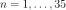
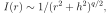

4.1.23. Laor: relativistic line broadening model¶
This multiplicative model broadens an arbitrary additive component with a relativistic line profile. The relativistic line profile is interpolated from tables produced by Laor (1991). In his model, the line transfer function is determined for emission from the equatorial plane around a Kerr black hole, assuming an emissivity law . The transfer function is calculated at a grid of 35 radii ( for , in units of ), 31 inclinations uniformly spaced in , and 300 frequencies, logarithmically spaced between 0.1 and 5 times the emission frequency, respectively.
Using these numbers, a radial integration is done using an emissivity law

where is a characteristic scale height and an
asymptotic power law index (for large  ,
). The integration is done between an inner
radius and an outer radius . Given the radial
grid that is provided in Laor’s data, the outer radius extends out to at
most .
,
). The integration is done between an inner
radius and an outer radius . Given the radial
grid that is provided in Laor’s data, the outer radius extends out to at
most .
Warning
Of course, any line or continuum emission component can be convolved with the this broadening model; for continuum components the computational time may be very large, however, due to the convolution involved.
Warning
The outer radius cannot be larger than .
The parameters of the model are:
r1 : Inner radius of the disk, in units of . The
minimum allowed value is 1.234 (for a maximally rotating Kerr black
hole). For a Schwarzschild black hole, one should take
. Default value: 1.234.r2 : Outer radius of the disk, in units of . Keep
this radius less than 400 (default value)q : Emissivity slope as described above. Default value:
2.h : Emissivity scale height. Default value: 0.i : Inclination angle (in degrees) of the disk (angle between line
of sight and the rotation axis of the disk). Default value: 45
degrees.Recommended citation: Laor (1991).